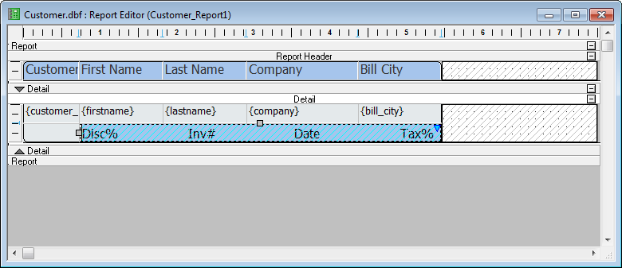
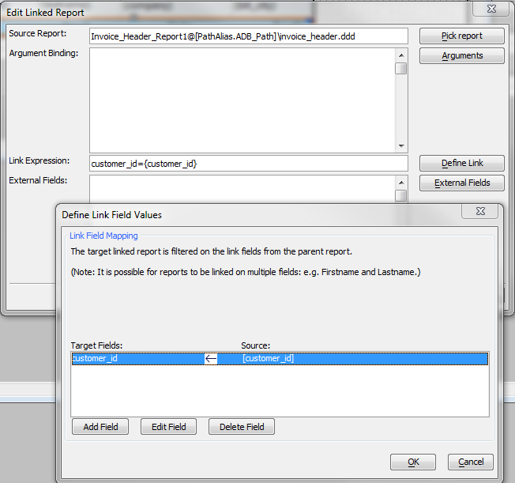
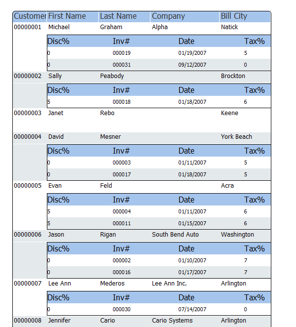
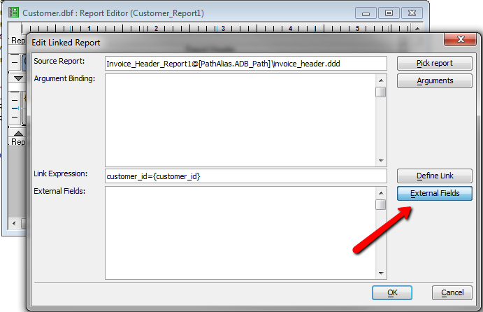
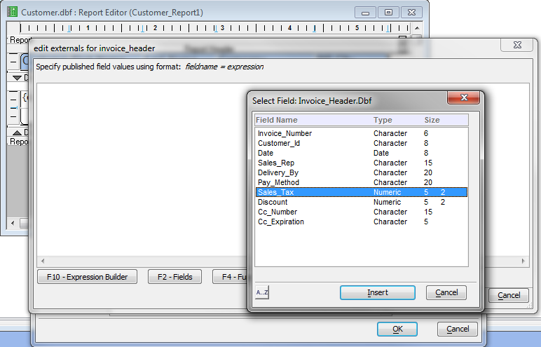
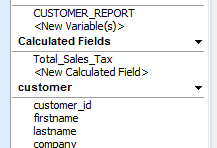
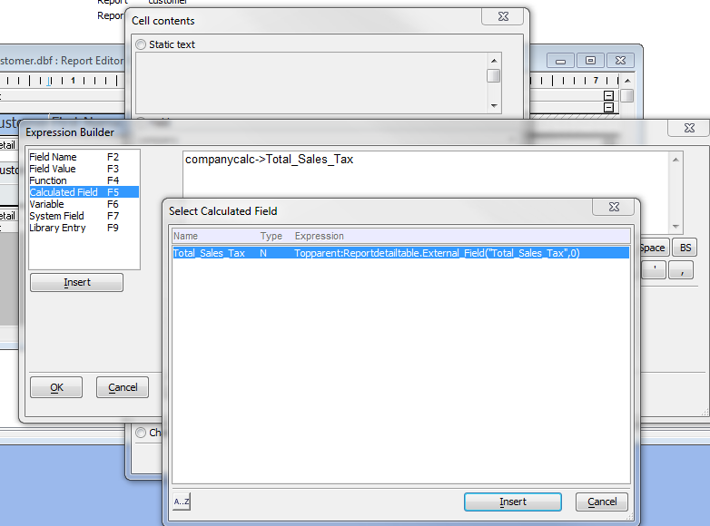

Linked Reports
Linked Reports are Layout Table reports embedded into other reports, and linked with the host report on some field. Linked Reports are similar to Subreports, but more flexible — and, in fact, similar in functionality to Subreports in some other products.Using linked reports allows you to create ledger reports, among other useful report patterns that were not previously possible. In a ledger report, the Debit and Credit tables are both linked to the account table on the Account ID field, and it is possible to compute a balance on the account. Structurally, this pattern is the same as for a customer statement report that displays orders and payments.
Creating a Linked Report
A Linked Report must be a quick report or layout table report. It can be linked into a layout table report or a free form report. Typically linked reports look best if they themselves have no grouping: the grouping is done by the containing report and passed to the linked report using either an argument or a filter for the link.To create Linked Report from a layout table report, add a row to the host report, merge enough cells in the row to contain the report, then use the cell contents menu to add a Linked Report. Pick the report to link, bind the arguments or create the linking filter, save, and preview.

Note that there's hatching over the linked report definition to avoid confusion when editing.
To create Linked Report from a free form report, create an open area big enough to contain the report, then click Linked Report from the bottom of the toolbox and drag a rectangle in the destination area to hold the Linked Report. Pick the report to link, bind the arguments or create the linking filter, save, and preview.
Using an argument to link the report
An Argument is defined by the report being linked to, i.e. the child report. If the report has an argument that is not filled in by the caller, the user will be prompted, e.g. for what_state , if the argument is what_state.If you want to run a linked report against a big SQL table, you always want to use Arguments. The arguments should be defined to control the child SQL report's WHERE clause. This is much more efficient than, say, bringing down a million records from the SQL database just to extract 100 of them on the application server.
Using a filter to link the report
A filter allows the user to reuse an existing report that shows all the records by default, but filters for a given context. It is defined by the calling report and applied to the connection used by the linked report.This is the editing dialog for filtering a linked report.

This is how the linked report looks with the filter in place.

You can drill down deeper by embedding a linked invoice items report inside the invoice header report.
Publishing totals back from the Linked Report to the containing report
In the 'Edit Linked Report' dialog (for cell content = report) click on the 'External Fields' button. This will bring up a published field editor.
Type or build the fieldsname = <expression> pairs of data you want to publish back to the parent report from the child report.

In this particular case, we don't really have the sales numbers we want in the child table, Invoice_Header: to get that we'd have to go to the grandchild table, Invoice_Items. All we can do here to sum the sales tax.
Once you pressed OK in the External Fields dialog, you will see new fields in the calculated fields for the parent that match your published field names.

You can use these calc fields in the parent report.

We'll leave as an exercise for the student the task of adding the grandchild report, publishing back sales totals per invoice, publishing back discounted and tax totals per customer, and computing a grand total.